Revivez les meilleurs moments de la vie de l'UFR STA
Découvrez en images les activités académiques, les compétitions, les journées d'excellence, les projets innovants, les sorties pédagogiques ainsi que les événements qui rythment la vie des étudiants de l'UFR Sciences et Technologies Avancées.

Nos Albums Photos
Chaque album rassemble les meilleurs souvenirs d'un événement organisé par l'UFR STA. Cliquez sur une photo pour l'afficher en grand ou utilisez le bouton Voir l'événement afin d'accéder directement à la description complète de cette activité.
Journée d'Excellence
Cérémonie de remise des distinctions aux meilleurs étudiants, exposition des projets innovants, rencontres entre enseignants, partenaires et étudiants dans une ambiance de célébration.
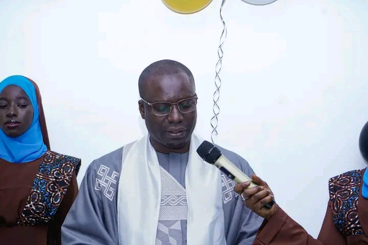
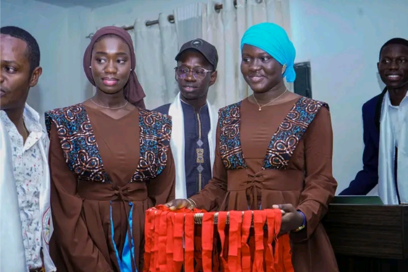
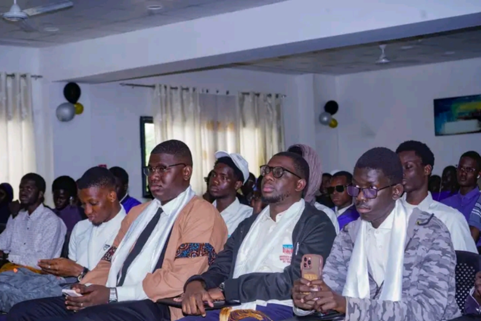
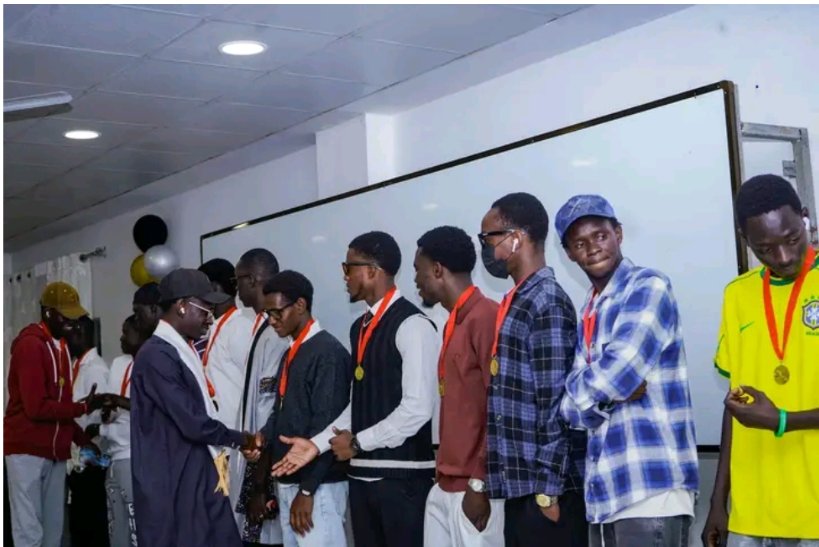
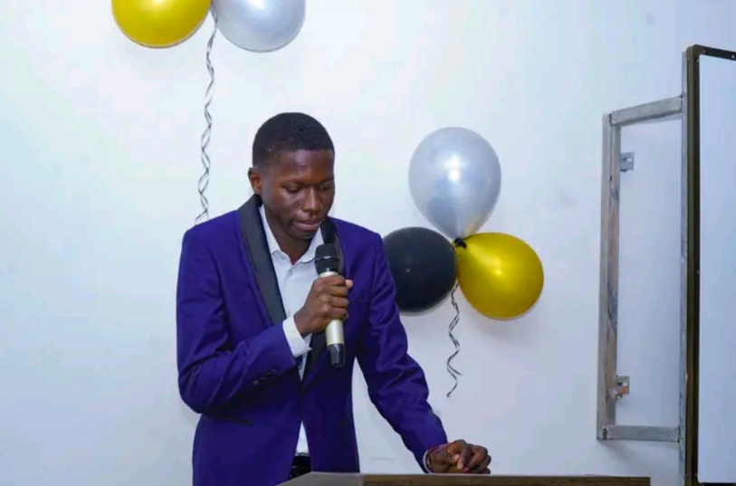
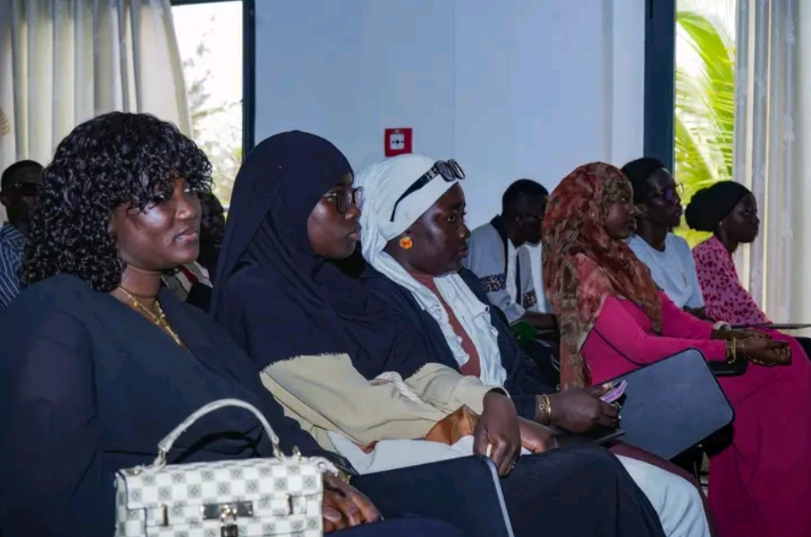
Compétition de Génie en Herbe
Les départements de l'UFR STA s'affrontent autour d'épreuves scientifiques, logiques et culturelles. Les finalistes sont récompensés lors de la Journée d'Excellence.
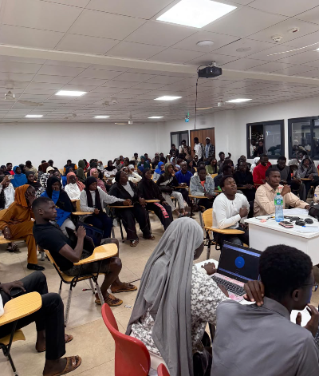
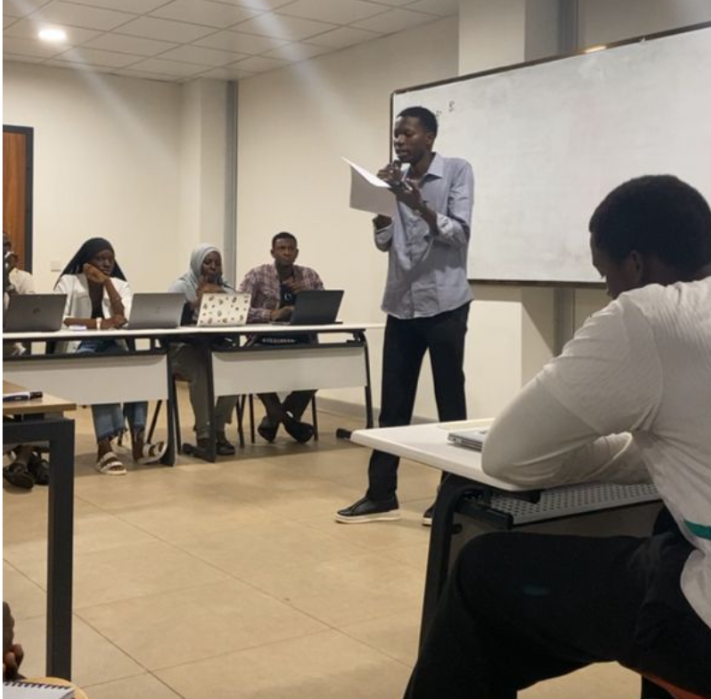
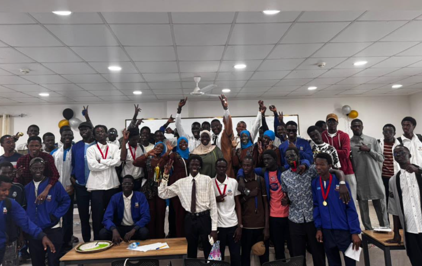
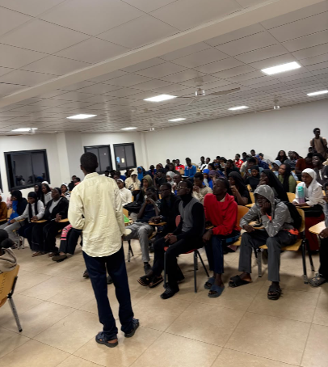
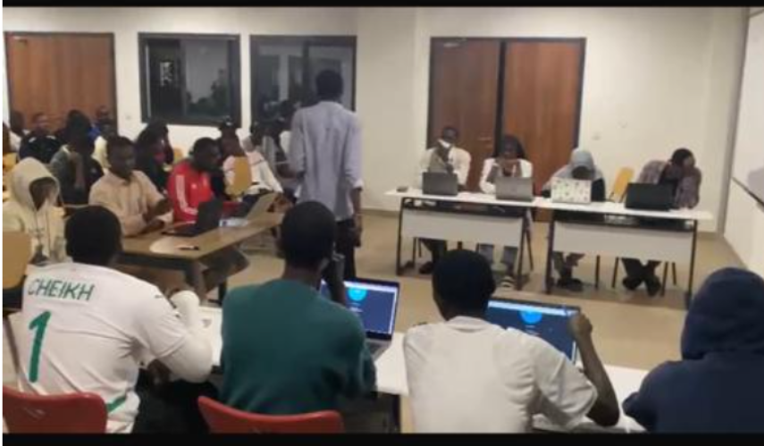
Sortie Pédagogique des étudiants de Licence 3 SML
Une immersion sur le terrain permettant aux étudiants de mettre en pratique leurs connaissances, de découvrir le monde professionnel et d'échanger avec des spécialistes du domaine.
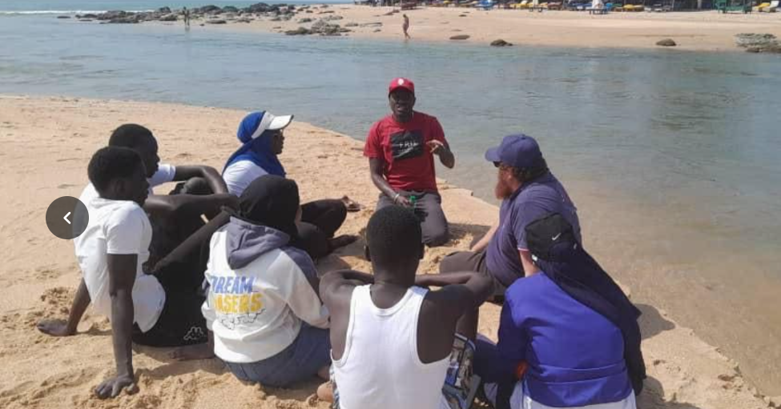
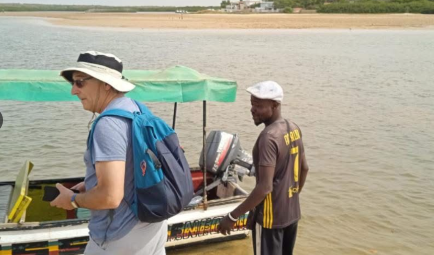
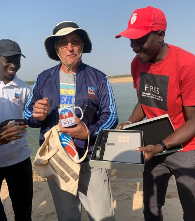
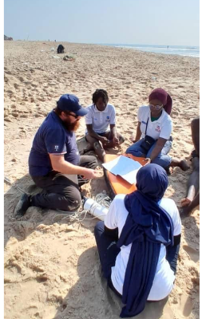
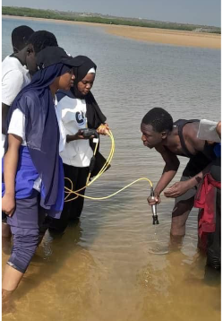
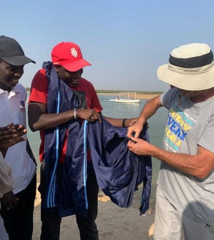
Présentation des Projets IoT
Les étudiants de Licence 3 Informatique présentent leurs réalisations en Internet des Objets devant les enseignants, les étudiants et les partenaires de l'UFR STA.
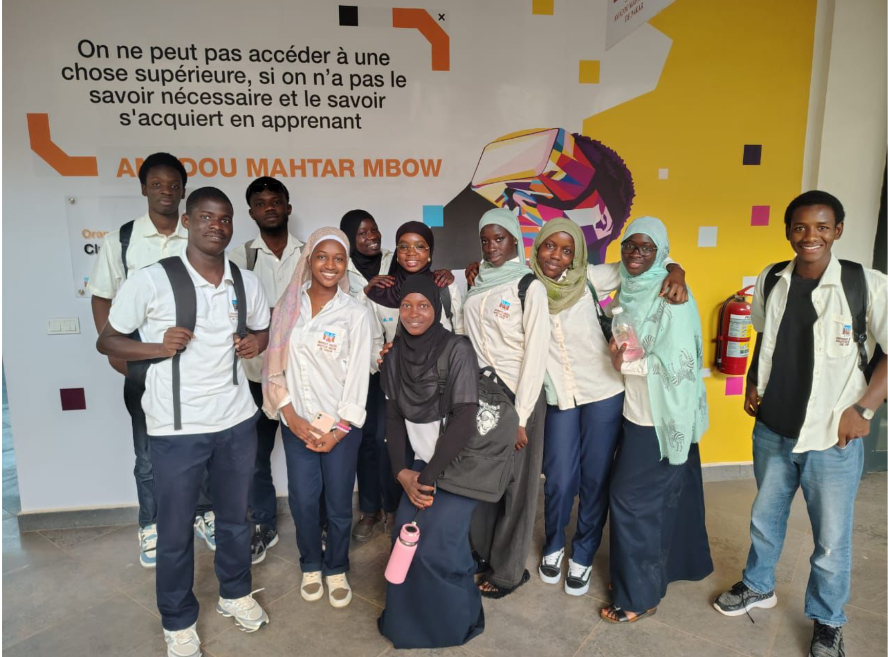
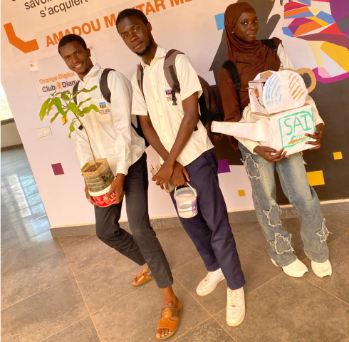
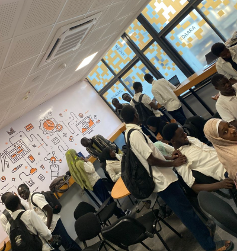
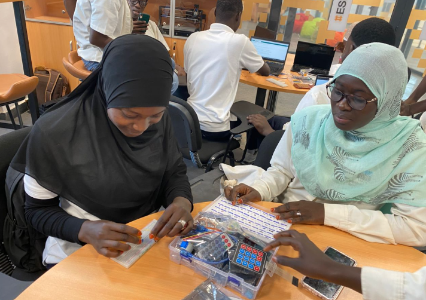
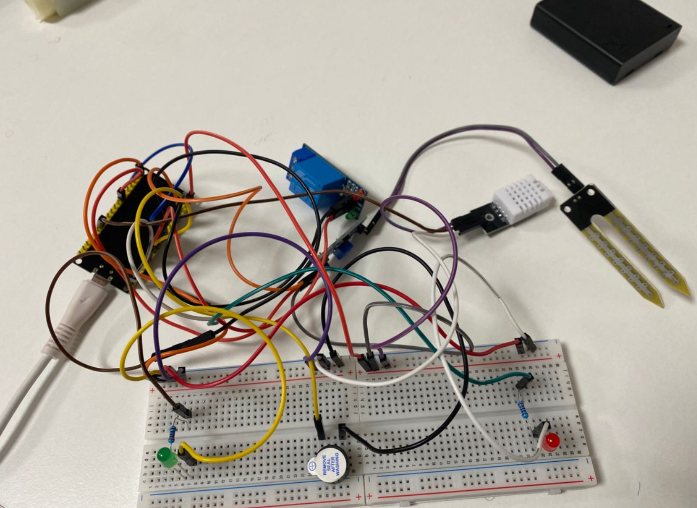
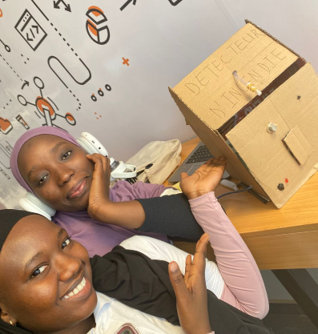
Conférences Modelisation
Les enseignants-chercheurs et les étudiants présentent leurs travaux de recherche, leurs projets innovants et les résultats obtenus dans les différents départements.
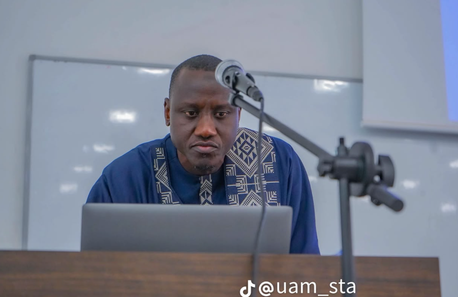
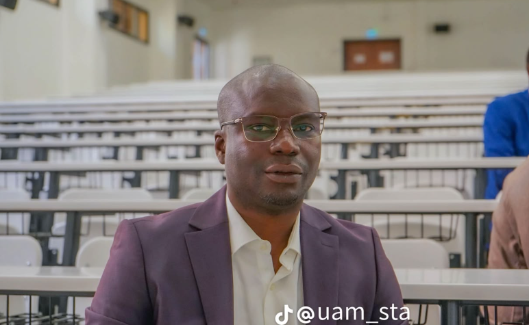
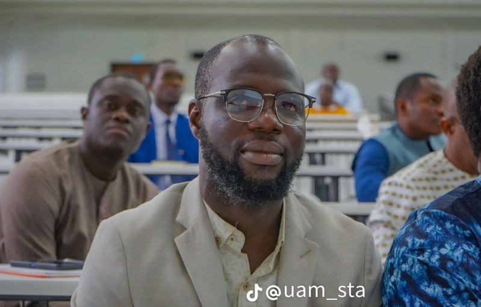
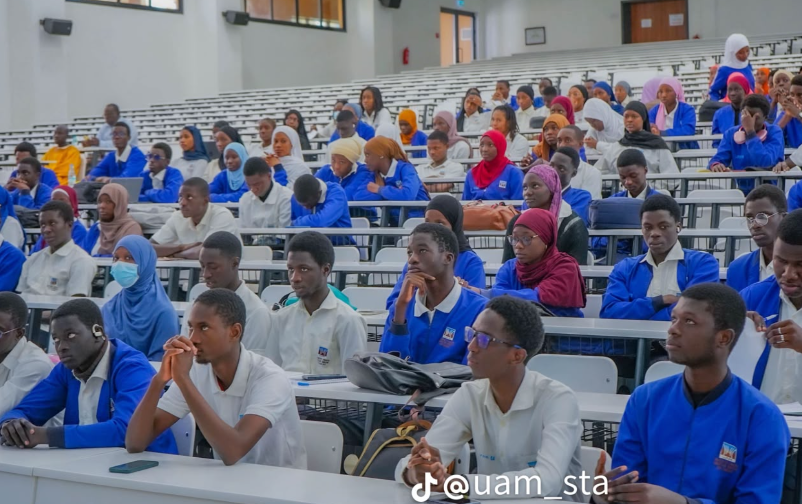
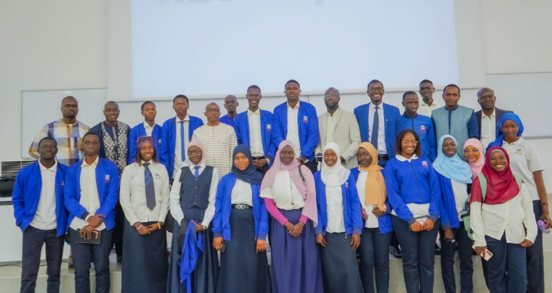